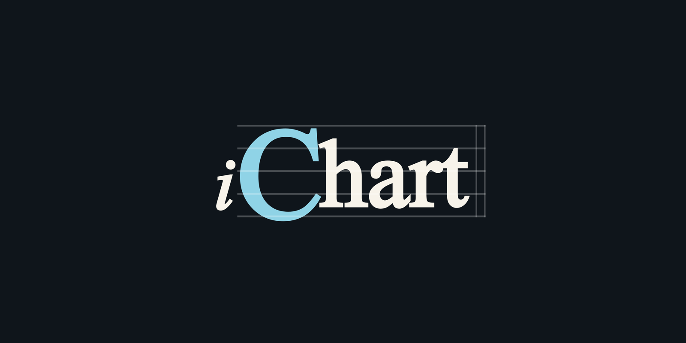
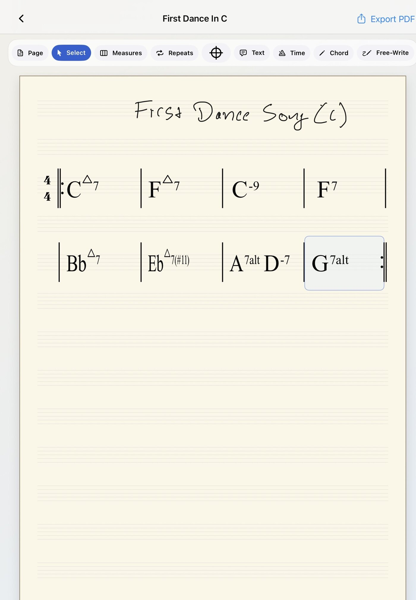
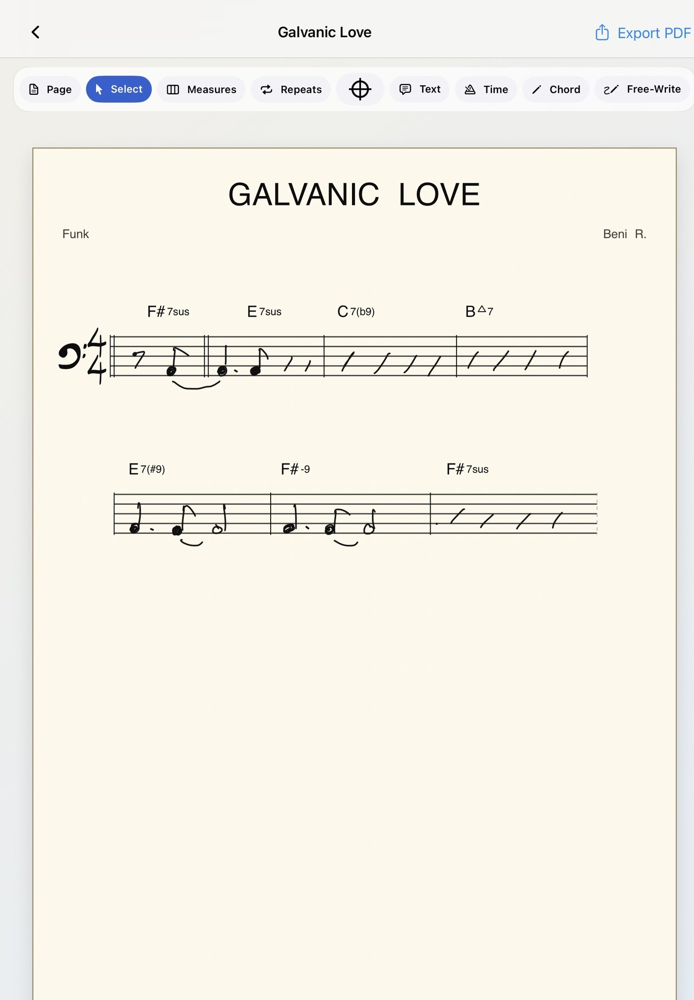
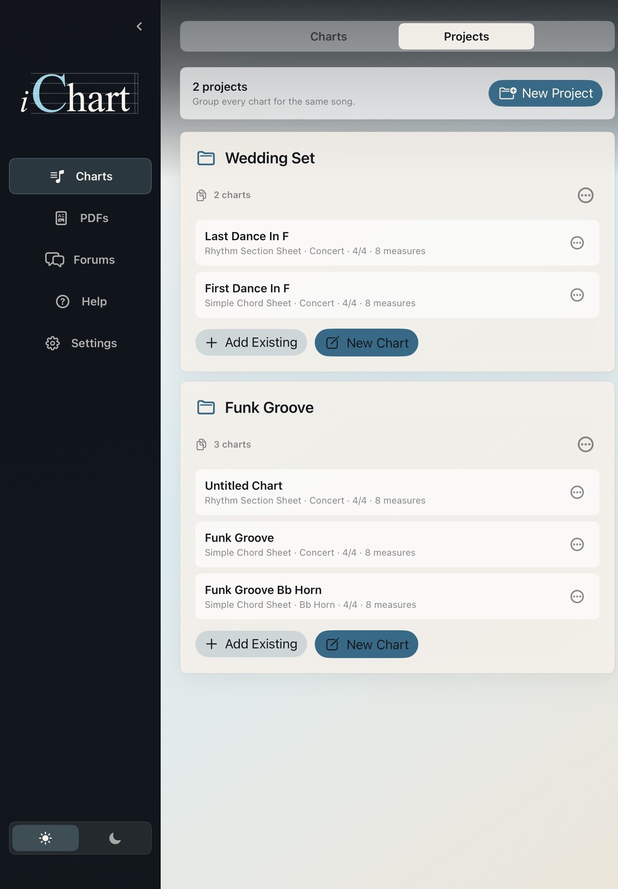
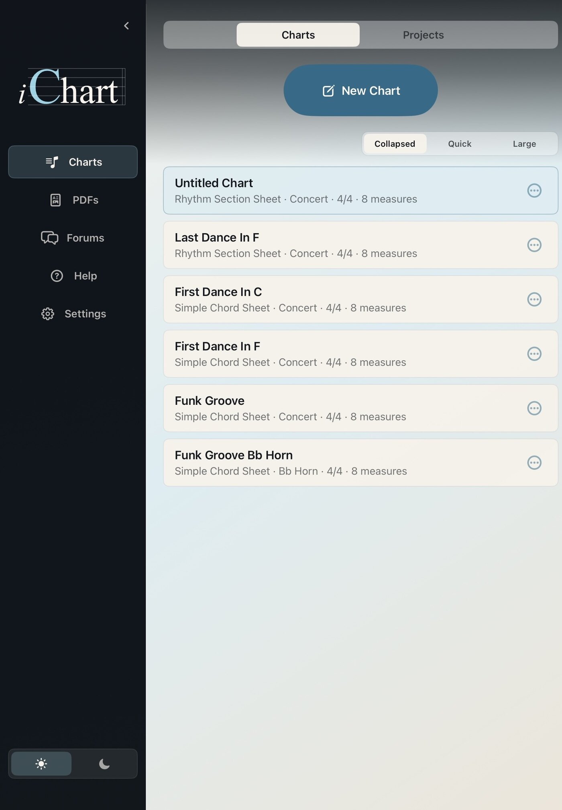
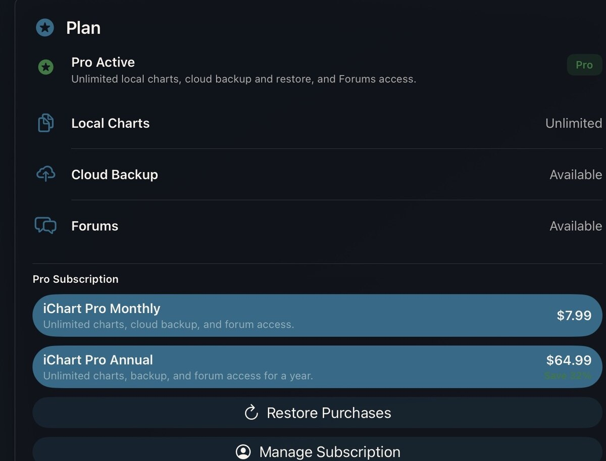
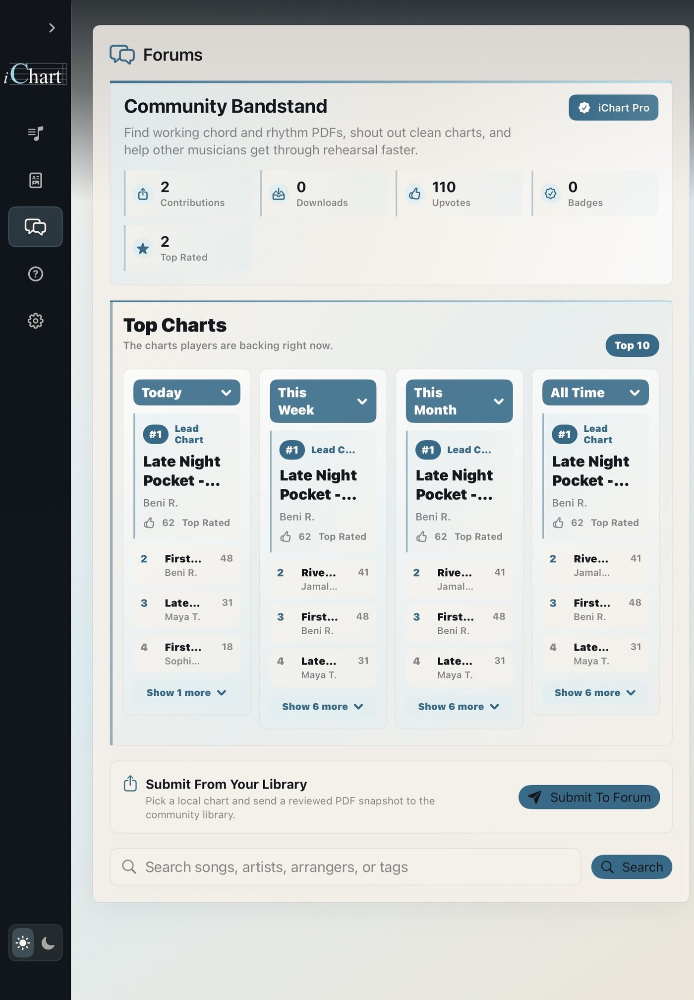
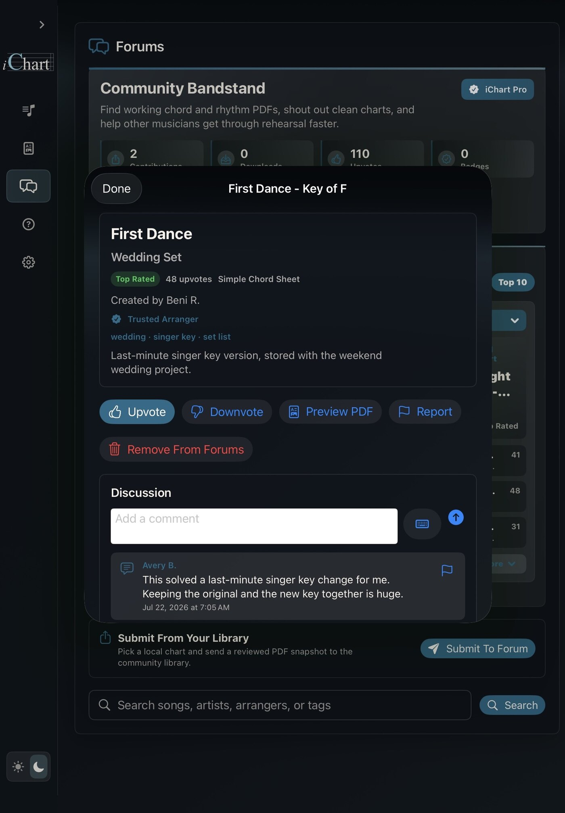
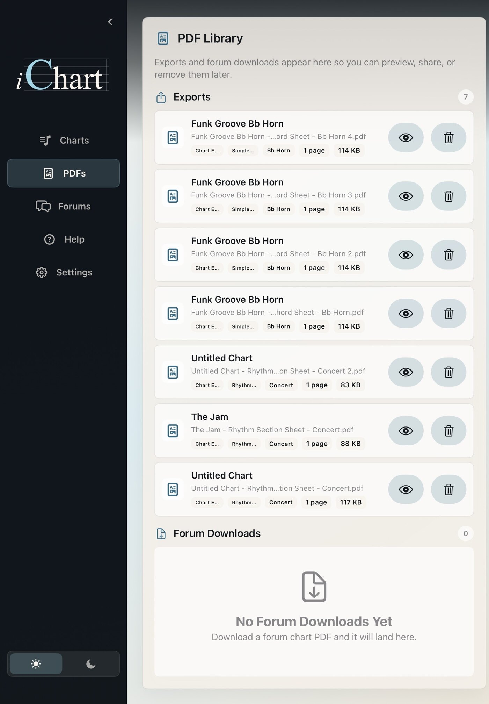

Write By Hand
Use Apple Pencil to write chords, repeats, rhythm cues, section labels, and notes directly on the page.


iPad native chart writing for working musicians
Handwrite digital music charts at paper-chart speed.
Write chords, repeats, handwritten rhythm figures, form markings, and notes with Apple Pencil, then keep the chart editable, transposable, organized, and ready to export.
iChart is built for working musicians: Whether it's rehearsals, club dates, weddings, or corporate gigs, you can create clean chord charts that are quick to write and easy to share.
Use Apple Pencil to write chords, repeats, rhythm cues, section labels, and notes directly on the page.
Duplicate a chart and transpose chord symbols into the key you need.
Keep charts in a project folder and update them as you go.
Send quick, readable charts to the players and keep the source chart for later edits.

For bandleaders and gigging musicians
Write a quick, clean chart for the rhythm section, duplicate it for another player, transpose the chords, and export PDFs without starting the page over.

Write exercises, rhythm studies, chord studies, and simple lead-sheet sketches by hand. Duplicate a chart for a new key or skill level, export a PDF for students, and keep the editable original ready when the page gets lost, damaged, or needs to change next week.
Create readable worksheets without rebuilding the same chart in a notation program.
Move chord charts into a student's range or instrument key without rewriting the page.
Keep exercises, tune forms, and class charts organized so lost handouts are easy to replace.

iChart Pro
Basic gives you local chart writing and PDF export. Pro is built for musicians who rely on iChart across gigs, lessons, bands, and recurring material.

Unlimited Charts
Build a deeper local library and use Projects to group song versions, band books, lesson material, and set folders.
Backup And Restore
Back up supported chart data to your Pro account and restore your library after reinstalling or moving to a new iPad.
Forums
Browse, publish, vote, comment, and download reviewed PDF chart snapshots from other iChart users.


Now available on the App Store
Built for iPad with Apple Pencil.
